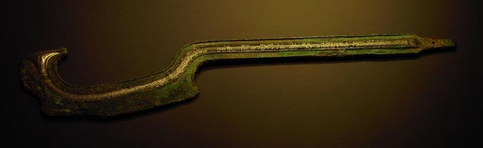

The story of Zeniff actually begins back in Omni 1:27–30, where Amaleki mentioned two expeditions to the land of Lehi-Nephi and added that he had a brother who went, presumably with the second party. Amaleki had not heard anything about the second group since then. His entire record is two short chapters long.
There actually were two trips or expeditions of Nephites to the land of Lehi-Nephi, which at the time was occupied by Lamanites. Zeniff first recorded the surprising events that transpired during the first of these expeditions. As their group got close to the land of Nephi, Zeniff was sent to scout out the situation so that their army could “destroy” the Lamanites (9:1). Zeniff was chosen for this mission because he was prepared. He had done his homework: (1) he knew the language, and (2) knew the land. When he “saw that which was good among [the Lamanites],” he recommended that they make a treaty with the Lamanites rather than try to conquer them. But the leader of this trip was “stiffnecked” and contentious, which caused a fight and bloodshed among the expeditioners. All but fifty were slain. The survivors, including Zeniff, returned home to Zarahemla.
Zeniff, “being over-zealous to inherit the land of [his] fathers,” set out on a second expedition to the land of Lehi-Nephi. This group suffered “famine” and “sore affliction,” recognizing that the problems were rooted in their behavior, “for we were slow to remember the Lord our God” (9:3). Zeniff then led a small delegation with four men from his group to meet with the king of the Lamanites to see if they could “possess the land in peace” (9:5). Preferring peace, and as he had recommended making a treaty before, Zeniff went to the king who agreed and even moved his people out of that area.
Trusting the king, Zeniff and his people were given the lands of Lehi-Nephi and Shilom, and they began to repair walls, build buildings and plant crops, not realizing that the Lamanite king had designs to put them into bondage or oppressive servitude (9:10).
As the people of Zeniff began to settle in the land, they engaged in agricultural activities, planting a list of crops that included barley and wheat. At one time, both of these crops were assumed to have been entirely absent from the pre-Columbian New World.
However, that assumption regarding barley has been found to be incorrect. There are actually three types of wild barley native to the Americas—something scientists have now been aware of for a long time. Archaeologists first uncovered a domesticated form of barley native to the Americas in a pre-Columbian (ca. AD 900) context in the state of Arizona in 1983—more than 150 years since the publication of the Book of Mormon.
Since then, pre-Columbian barley has been found in several other places, including in the mid-west and eastern United States.
Evidence from what is called archaeobotany (the study of plant-remains at archaeological sites) now confirms that a species of barley was highly important to some cultures in the Americas during this pre-Columbian time period. This has important implications for the Book of Mormon. In the second and first centuries BC, barley played a significant role in Nephite society, not only as food, but as a measurement of exchange (Alma 11:1–19), just as it did in ancient Near Eastern economic systems.
John L. Sorenson commented, “That such an important crop could have gone undetected for so long by archaeologists justifies the thought that wheat might also be found in ancient [American] sites.” No matter how few anachronisms are thought to exist in the Book of Mormon, patience and faith are rewarded every time another one is disposed of.
Twelve years later, after settling in the land assigned to them by the Lamanites, the people of Shilom were attacked by the Lamanites, who were worried that “they could not overpower” the growing group of settlers and who wanted to take their produce.
The people of Shilom fled into the city of Nephi, seeking protection from Zeniff. They made preparations to fight back against the Lamanites.
President Spencer W. Kimball once warned: We are a warlike people, easily distracted from our assignment of preparing for the coming of the Lord. When enemies rise up, we commit vast resources to the fabrication of gods of stone and steel—ships, planes, missiles, fortifications—and depend on them for protection and deliverance. When threatened, we become anti-enemy instead of pro-kingdom of God (Spencer W. Kimball, “The False Gods We Worship,” Ensign, June 1976).
It is wise to be prepared for the future—natural disasters and potential physical dangers from those of ill will. Prophets ancient and modern have and will continue to counsel us how to more fully prepare and protect ourselves in a way that is consistent with the principles and covenants of the Gospel. But the Book of Mormon warns us how easily the tools of our defense can become the weapons of our rebellion (see also Alma 23:7).
The simple weapons made by the Nephites included bows, arrows, swords, cimeters, clubs, and slings. People have wondered about the cimeters. The word “ cimeter” is an old spelling of the word “scimitar,” which is a curved sword that usually has a cutting edge on the convex or outer side of the sword, but many ancient scimitars had a sharpened interior curve in addition to or in place of the exterior curve. It used to be thought that this weapon was first developed during the rise of the Muslims. However, it is now known that scimitars were used in both the Old World and the New, in both biblical and Book of Mormon times. Thanks to the Dead Sea Scrolls, scholars now know that the ancient Hebrew term “kidon” refers to a scimitar. In 1 Samuel 17:45, when David faced Goliath, he declared, “You come against me with a sword [hereb] and spear [hanit] and scimitar [kidon], but I come against you with the name of Yahweh Sabaoth, god of the ranks of Israel.” Some writers have thought it strange that the Lamanite

chieftain Zerahemnah would carry both a sword and a cimeter, but as Paul Hoskisson has observed, the biblical text says the same about Goliath.
Figure 4 Egyptian Sword. Image via Wikimedia Commons
Zeniff recorded that as the Nephites went to tackle the Lamanite insurgence, they turned to the Lord: “[F]or I and my people did cry mightily to the Lord that he would deliver us out of the hands of our enemies, for we were awakened to a remembrance of the deliverance of our fathers.” They succeeded, sorrowfully counted and buried all the dead, and were freed from bondage by turning to the Lord—at least for now!
President Spencer W. Kimball was fond of teaching that one of the most important words in the dictionary is “remember.” Remembering the goodness of God and the deliverance of their ancestors turned the hearts of these Nephites to the Lord. Their prayers were answered and they were able to go forth “in his might.”